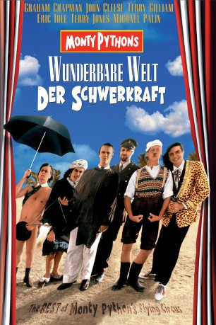

#1921 Die Wunderbare Welt der Schwerkraft
Alternativ: And Now for Something Completely Different
 
 IMDB-Wertung: 7.6 / 10
IMDB-Wertung: 7.6 / 10  Metascore: 0
Metascore: 0 
Sketchsammlung der englischen Comedy-Truppe Monty Pythons (mit John Cleese, Michael Palin, Eric Idle, Terry Jones, Graham Chapman und Terry Gilliam), die Ausschnitte aus ihren TV-Shows enthält, darunter der Wettbewerb um den Oberklassentrottel des Jahres, den Papageienkauf, die marodierenden Omas, das Holzfällerlied, das Mäuseklavier, den tödlichen Witz u.a.
Jahr: 1971
Dauer: 88 Minuten
FSK: 12
Land: England Studio: Columbia PicturesTonspuren: DD2.0 - ,
Untertitel:
Auflösung: 1080p (1920x1080) Größe: 6830 MB
Genre: Komödie
Regisseur: Ian MacNaughton
Drehbuch: Graham Chapman, John Cleese, Terry Gilliam, Eric Idle, Terry Jones
Soundtrack: Douglas Gamley
Darsteller:
 Graham Chapman als Brother / Policeman / Defence attorney / British pedestrian / Mr. Harrison, Apricot / The Colonel / 'Hell's Grannies' policeman / Jimmy Blankensop / Sir Edward Ross / Restaurant patron #1 / Letter Writer / Oliver St. John Mollusk / Mountie / Town Guild Lady
Graham Chapman als Brother / Policeman / Defence attorney / British pedestrian / Mr. Harrison, Apricot / The Colonel / 'Hell's Grannies' policeman / Jimmy Blankensop / Sir Edward Ross / Restaurant patron #1 / Letter Writer / Oliver St. John Mollusk / Mountie / Town Guild Lady John Cleese als Announcer / Hungarian Citizen / self - Defence Teacher / Sir George Head / Policeman / Interviewer / Mr. Praline / Second General / Christopher Columbus / Mungo the Cook / Bank Robber / Accountant #2, falling past the window / Vocational Guidance Counselor / Vivian Smith Smythe Smith / Mountie / Town Guild Lady
John Cleese als Announcer / Hungarian Citizen / self - Defence Teacher / Sir George Head / Policeman / Interviewer / Mr. Praline / Second General / Christopher Columbus / Mungo the Cook / Bank Robber / Accountant #2, falling past the window / Vocational Guidance Counselor / Vivian Smith Smythe Smith / Mountie / Town Guild Lady Terry Gilliam als Self-Defence Nun / Flasher / Uncle Sam / Caterpillar Man / Sign Holder / Conrad Poohs
Terry Gilliam als Self-Defence Nun / Flasher / Uncle Sam / Caterpillar Man / Sign Holder / Conrad Poohs Eric Idle als Prosecutor / Marriage Counselor / Arthur Nudge / Self-defence student #4, interested in pointed sticks / 'Hell's Grannies' analyst / Arthur Wilson / Arthur Wilson Two / Nightclub Emcee / Linkman / First General / Restaurant Manager / Lingerie Shop Owner / Accountant #1, falling past the window / Fairy Godmother / Rita Fairbanks / Simon Zinc Trumpet Harris / Mountie / Lady With Cookbook
Eric Idle als Prosecutor / Marriage Counselor / Arthur Nudge / Self-defence student #4, interested in pointed sticks / 'Hell's Grannies' analyst / Arthur Wilson / Arthur Wilson Two / Nightclub Emcee / Linkman / First General / Restaurant Manager / Lingerie Shop Owner / Accountant #1, falling past the window / Fairy Godmother / Rita Fairbanks / Simon Zinc Trumpet Harris / Mountie / Lady With Cookbook Terry Jones als Stage Manager / Tobacconist / 2nd Hungarian Man / Squire / Self-defence student #3 / Tenant #1 / Flasher / Mouse Organist Ken Ewing / Fat Soldier / Waiter / Nude Organist / Brian / Nigel Incubator Jones
Terry Jones als Stage Manager / Tobacconist / 2nd Hungarian Man / Squire / Self-defence student #3 / Tenant #1 / Flasher / Mouse Organist Ken Ewing / Fat Soldier / Waiter / Nude Organist / Brian / Nigel Incubator Jones Michael Palin als Gumby / Man with tape recorder / Phrasebook Author / Arthur Pewtey / Second self - defence student / Second Tenant / Lost His Wallet / Shrill Petrol Announcer / Milkman / Ernest Scribbler / Pet shop employee / Lumberjack / Headwaiter Gilberto / Herbert Anchovy / Blackmail Presenter / Gervais Brookhamster / Town Guild Lady
Michael Palin als Gumby / Man with tape recorder / Phrasebook Author / Arthur Pewtey / Second self - defence student / Second Tenant / Lost His Wallet / Shrill Petrol Announcer / Milkman / Ernest Scribbler / Pet shop employee / Lumberjack / Headwaiter Gilberto / Herbert Anchovy / Blackmail Presenter / Gervais Brookhamster / Town Guild Lady Carol Cleveland als Dierdre Pewtey / Storyteller / Milkman Collector / Restaurant Patron #2 / Elsbeth
Carol Cleveland als Dierdre Pewtey / Storyteller / Milkman Collector / Restaurant Patron #2 / Elsbeth Connie Booth als Best Girl
Connie Booth als Best Girl Winston Churchill als Himself , archive footage, uncredited
Winston Churchill als Himself , archive footage, uncredited Adolf Hitler als Himself - Speech to RAD, from T.d.W. , archive footage, uncredited
Adolf Hitler als Himself - Speech to RAD, from T.d.W. , archive footage, uncredited Richard Nixon als Himself , archive footage, uncredited
Richard Nixon als Himself , archive footage, uncredited- Queen Elizabeth the Queen Mother als Herself , archive footage, uncredited
- Lewis Alexander als Man in Restaurant , uncredited
- Neville Chamberlain als Himself - with Munich Accord , archive footage, uncredited
- Lesley Judd als Distraught Mother , uncredited
- King George VI als Himself , archive footage, uncredited
- Roy Lansford als Man in Bar , uncredited
 Fred Wood als Beggar , uncredited
Fred Wood als Beggar , uncredited
Datei: X:\Person\Monty Python\Wunderbare Welt der Schwerkraft, Die (1971, FSK12, 1920x1080).mkv seit 02.09.2015
Festplatte: HD Collection-7+mehr(A-Z)+Person
 Es gibt insgesamt 11 Filme in der Gruppe 'Person\Monty Python'
Es gibt insgesamt 11 Filme in der Gruppe 'Person\Monty Python'